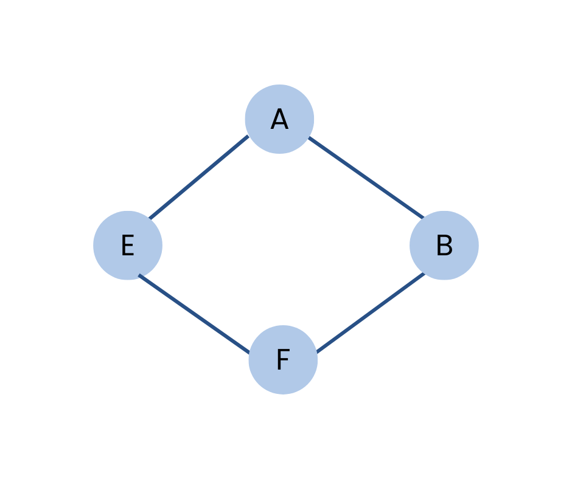

A connected graph is a graph in which, starting from one node, we can visit any other node in the graph. This implies that there is a path between every pair of nodes in the graph, ensuring connectivity across all nodes.

Applications
Power Grids: Ensures that power can reach any point from any source, making the network more resilient.
Road Networks: Helps in urban planning to ensure accessibility across the city.